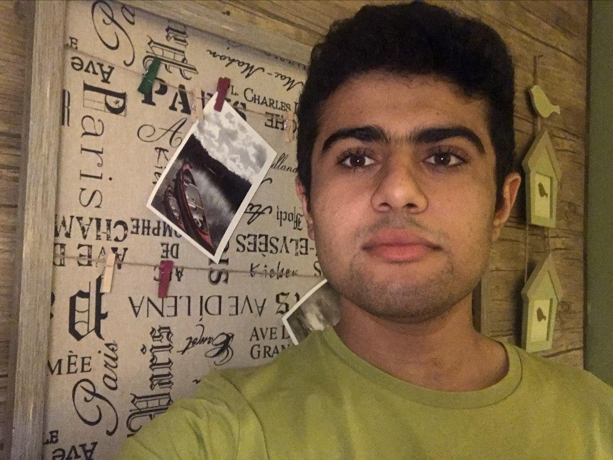

My name is Reza Namazi. I'm a B.Sc Computer Engineering student at Sharif University of Technology - Kish International Campus. Currently, I'm working as a teaching assistant to Dr. A.A. G.Ghahremani.
My main research interests are Computer Vision and Deep Learning. I believe that Artificial Intelligence is rapidly changing our lives and I would like to be a part of this change.
In my leisure time I enjoy playing the piano, watching movies, cycling and bowling.
In my free time, I also enjoy programming for fun.
Sharif University of Technology - International Campus, Kish Island, Iran
Expected graduation: Winter 2021
Shahid Beheshti (NODET*), Ahvaz, Iran
Graduation: Spring 2016
Sharif University of Technology, Kish, Iran - 2017 to Present [link]
Optimizing Algebraic Multigrid Methods for large sparse algebraic systems of equations using parallel processing and machine learning techniques under the supervisory of Dr. M. Sani.
Given a list of nodes and edges, it is possible to visualize the graph in a 2-dimensional plane in an unlimited
number of ways. In this project, I tried to find the "best" representation (aesthetically pleasing) of
the given graph using
force-directed layout algorithm.
In this project I tried to analyze an epidemic with infection rate α and recovery rate β in an SIS (Susceptible - Infected - Susceptible) model. Graphing the number of infected and susceptible nodes of the population in different steps of the epidemic reveals the epidemic threshold of the epidemic and much more!
Sharif University of Technology, Kish, Iran - Present
Numerical Methods course offered by Dr. A.A. G.Ghahremani
Sharif University of Technology, Kish, Iran - October 2019 [link]
Engineering Probability and Statistics course offered by Dr. A.A. G.Ghahremani
Sharif University of Technology, Kish, Iran - March 2019 [link]
Basics of Programming course offered by Dr. M. Sani
Arjan Araye Company, Ahvaz, Iran - 2015 to 2017
Worked as a back-end programmer to create a system and an application for managing drugstores. The system is currently used in several drugstores throughout Iran.
Top student in Computer Engineering department of Sharif University of Technology - December 2018 [link]
IPM School of Cognitive Science (SCS), Tehran, Iran - July 2019 [link]
Attended IPM summer school covering Machine Learning, Deep Learning, Machine Vision and Reinforcement Learning and passed the evaluation test